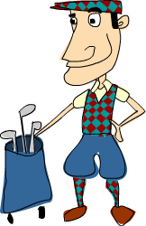

함수 문법
패턴 매칭
이번 챕터에서는 하스켈의 멋진 문법들과 패턴 매칭 기능을 살펴봅니다. 패턴 매칭 기능은 데이터가 처리하기에 적합한 형태인지 확인하고 지정된 패턴에 따라 그 값을 해체해서 처리하기 쉽게 만들어주는 기능입니다.
함수를 작성할 때, 서로 다른 패턴의 인자들에 대해 처리하는 여러개의 함수 몸체를 정의해서 하나의 함수를 만들 수 있습니다. 이 기능을 이용하면 정말 간결하고 읽기 좋은 멋진 코드를 작성할 수 있습니다. 패턴 매칭은 숫자, 문자, 리스트, 튜플 등 어떤 데이터 타입에도 사용할 수 있습니다. 숫자를 하나 받아 받은 숫자가 7인지 아닌지 확인하는 아주 간단한 함수를 하나 만들어 보겠습니다.
lucky 함수를 호출하면, 여러 개의 함수 정의를 위에서부터 아래로 순서대로 검토하면서 각 함수 정의의 인자가 패턴에 부합하는지 확인하고, 처음으로 부합하는 함수 정의가 실행됩니다. 여기서 이 함수의 첫번째 정의에 부합되는 경우는 인자가 7인 경우 뿐입니다. 받은 숫자가 7이 아닌 경우 두번째 패턴으로 넘어가고, 두번째 패턴에서 어떤 값이든 받아들일 수 있는 x 에 받은 숫자가 할당될 것입니다. 물론 이 함수를 if 문으로도 간단히 작성할 수 있습니다. 하지만 정수를 하나 받아 1부터 5까지의 숫자에 대해서는 해당 숫자의 영어 이름을 반환하고 그 외에는 "Not between 1 and 5" 라고 반환하는 함수는 어떨까요? 패턴 매치 기능 없이는 여러번 중첩된 if else 구문으로 점철된 더러운 코드를 써야 할 것입니다. 하지만 패턴 매치 기능을 이용하면 아주 멋지게 이 함수를 작성할 수 있습니다.
여기서 (모든 경우에 매치되는) 마지막 패턴을 맨 위로 올리면 이 함수는 받은 값에 관계 없이 언제나 "Not between 1 and 5" 를 반환하게 된다는 점을 기억하세요. 첫번째 패턴이 어떤 숫자든 받을 수 있기 때문에 다음 패턴으로 넘어가서 다른 정의가 실행될 가능성이 없어지기 때문이죠.
전에 만들었던 팩토리얼 함수를 기억하시나요? 그 때는 n 팩토리얼을 정의하기 위해 product [1..n] 라고 썼었습니다. 하지만 이 외 달리, 좀 더 수학적인 방법으로 팩토리얼 함수를 재귀적으로 작성할 수도 있습니다. 일단 0 팩토리얼은 정의에 의해 1입니다. 그리고 어떤 0이 아닌 양의 정수의 팩토리얼은 그 수의 바로 앞의 수의 팩토리얼에 그 수를 곱한 값이죠. 이것을 하스켈로 쓰면 이렇게 쓸 수 있습니다.
처음으로 재귀적으로 함수를 정의해 보았습니다. 재귀는 하스켈에서 아주 중요하기 때문에 나중에 다시 자세히 살펴보겠습니다만, 우선 이 함수로 3 팩토리얼을 계산하는 과정을 살펴보겠습니다. factorial 3 을 호출하면 이는 두번째 패턴에 매칭되어 3 * factorial 2 를 실행합니다. factorial 2 는 2 * factorial 1 가 되므로 전체 식은 3 * (2 * factorial 1) 가 되고, factorial 1 은 1 * factorial 0 이므로 전체 식은 3 * (2 * (1 * factorial 0)) 가 됩니다. 그리고 이 시점에서, 지금까지는 모든 정수를 받을 수 있는 두번째 패턴이 사용됐지만, 첫번째 패턴에서 factorial 0 = 1 이라고 정의했기 때문에 factorial 0 은 1이 됩니다. 그래서 최종적으로는 3 * (2 * (1 * 1)) 가 됩니다. 만약 첫번째 패턴과 두번째 패턴의 순서를 바꾼다면 첫번째 패턴이 0을 포함한 모든 숫자에 매칭되어 이 함수는 절대로 끝나지 않게 될 것입니다. 그래서 패턴을 지정할 때 순서는 매우 중요하며 보통 가장 구체적인 패턴을 가장 앞에, 가장 일반적인 패턴을 가장 뒤에 놓는 것이 좋습니다.
경우에 따라서는 패턴 매칭이 실패하기도 합니다. 이 함수를 보세요.
만약 이 함수에 예상치 못한 인자를 준다면 어떻게 될까요?
패턴이 완전하지 않다고 불평하네요. 그럴 만도 합니다. 이런 상황이 생기면 프로그램이 비정상 종료될 수 있기 때문에, 패턴을 만들 때는 항상 모든 인자를 받을 수 있는 패턴(흔히 catch-all 패턴이라고도 합니다)을 포함해서 예상치 못한 입력에 대응할 수 있도록 하는 것이 좋습니다.
패턴 매칭은 튜플에 대해서도 사용할 수 있습니다. 2차원 공간의 벡터를 나타내는 페어 두 개를 받아 그 두 벡터를 더하는 함수를 만들려면 어떻게 하면 될까요? 참고로 두 벡터를 더할 때는 벡터의 각 성분, 지금은 2차원 공간의 벡터를 다루고 있으므로 x 값과 y 값을 각각 더해주면 됩니다. 이 기능은 패턴 매칭 없이도 다음과 같이 구현할 수 있습니다.
하지만 패턴 매칭을 쓰면 다음과 같이 더 보기 좋게 쓸 수 있습니다.
아, 훨씬 좋군요. 참고로 이 패턴은 그 자체로 이미 catch-all 패턴입니다. 위에서 정의한 두가지 정의의 addVectors 는 모두 addVectors :: (Num a) => (a, a) -> (a, a) - > (a, a) 의 타입을 가지므로 이 함수가 항상 두 개의 페어를 인자로 받는다는 것을 알 수 있습니다.
이미 익히 알고 있는 바와 같이 fst 와 snd 함수를 이용하면 페어의 값들을 분리해 낼 수 있습니다. 하지만 3개의 값을 갖는 튜플인 트리플은 어떤가요? 하스켈에는 트리플을 위해 특별히 제공되는 기본 함수가 없지만 직접 만들 수 있습니다.
여기서 _ 는 list comprehension에서와 마찬가지로 _ 자리의 값이 무엇이든 상관하지 않겠다는 의미입니다.
말이 나온 김에, list comprehension 내부에서도 패턴 매칭이 가능합니다.
만약 list comprehension 내의 패턴 매치가 실패하면 그 값은 무시합니다.
리스트에 대해서 패턴 매칭도 가능합니다. 빈 리스트와 매칭하려면 [] 라고 쓰면 되고, : 와 [] 를 섞어서 만든 패턴을 이용할 수도 있습니다. 하지만 [1,2,3] 이 1:2:3:[] 와 동일한 의미를 갖기 때문에 둘 중 어떻게 쓰셔도 상관 없습니다. x:xs 와 같은 패턴은 주어진 리스트의 머리는 x 라고 하고, 나머지 리스트는 xs 라고 하겠다는 의미입니다. 이 때, 주어진 리스트에 포함된 값이 하나뿐이더라도 xs 를 빈 리스트로 해서 이 패턴에 매칭이 가능합니다.
만약 리스트의 머리 뿐만이 아니라 리스트의 첫번째 값 3개를 패턴 매칭으로 얻어오고 싶다면 x:y:z:zs 라고 쓰면 됩니다. 이 패턴은 길이가 3 이상인 리스트에만 매치될 것입니다.
자, 이제 리스트에 대한 패턴을 작성하는 방법을 배웠으니 head 함수를 직접 만들어 봅시다.
잘 동작하는지 확인해 봅시다.
좋군요! 여기서 여러 개의 변수에 값을 할당하려면(설령 실제 변수가 아니라 _ 라도) 반드시 괄호로 감싸야 한다는 점에 주의하세요. error 함수는 처음 나왔습니다. 이 함수는 문자열을 하나 받고 실행시간 오류(runtime error)를 발생시키는데, 받은 문자열이 어떤 종류의 오류가 발생한 것인지의 정보로 사용됩니다. 이 함수가 실행되면 프로그램이 강제 종료되므로, 많이는 쓰지 않는 것이 좋겠습니다. 하지만 head 함수에 빈 리스트를 넘겨주면 달리 처리할 방법이 없어서 사용되었습니다.
이번엔 리스트를 하나 받아 처음 몇 개의 값을 서술형 영어로 설명하는 문장을 반환하는 함수를 만들어 봅시다.
이 함수는 빈 리스트, 값이 하나인 리스트, 값이 두개인 리스트, 값이 2개 이상인 리스트에 대한 패턴을 모두 갖추고 있으니 안전합니다. 참고로 여기서 (x:[]) 와 (x:y:[]) 는 (괄호 없이) [x] 와 [x,y] 로 대체해서 쓸 수 있습니다. 하지만 (x:y:_) 는 길이가 확실히 정해지지 않은, 길이가 2 이상인 모든 리스트에 매치될 수 있으므로 대괄호 형태로 쓸 수 없습니다.
앞에서 list comprehension을 소개할 때 length 함수를 직접 만들어 본 적이 있습니다. 이번엔 패턴 매칭과 간단한 재귀를 이용해 이 함수를 다시 만들어 보겠습니다.
앞서 본 팩토리얼 함수와 비슷하군요. 우선 알려진 입력에 대해 함수를 정의했습니다. 팩토리얼에서는 0 팩토리얼은 1이라는 것이었고, 이 경우엔 빈 리스트의 길이는 0이라는 사실입니다. 이런 조건을 경계 조건(edge condition)이라고도 부릅니다. 그리고서 두번째 패턴에서는 리스트를 하나 받아 머리와 꼬리로 쪼갰습니다. 그리고 리스트의 길이는 리스트의 꼬리의 길이에 1을 더한 값과 같다고 정의했죠. 리스트의 머리의 값이 무엇인지는 중요치 않으므로 _ 에 할당해서 무시했습니다. 이 함수에서 첫번째 패턴은 빈 리스트를, 두번째 패턴은 빈 리스트를 제외한 모든 리스트를 처리하기 때문에, 이 함수는 안전하게 모든 리스트를 처리할 수 있습니다.
그럼 length' 함수에 "ham" 이라는 문자열을 주고 실행시켜 봅시다. 우선 첫번째 패턴에서 받은 리스트가 빈 리스트인지 확인합니다. 빈 리스트가 아니기 때문에 두번째 패턴으로 넘어갑니다. 두번째 패턴에 매치되면 "ham" 은 머리와 꼬리로 해체되고 머리의 값은 무시되고 이 리스트의 길이는 1 + length' "am" 임을 알 수 있습니다. 마찬가지로 length' "am" 은 1 + length' "m" 가 되고, 가장 궁금한 length' "ham" 은 1 + (1 + length' "m") 임을 알게 됩니다. 여기서 length' "m" 는 1 + length' "" (1 + length' [] 와 같은 의미입니다)가 되고, 첫번째 패턴에서 length' [] 를 0 으로 정의했으므로 최종 결과는 1 + (1 + (1 + 0)) 가 됩니다.
이번에는 sum 함수를 구현해봅시다. 빈 리스트의 값들의 총합은 당연히 0입니다. 또 리스트의 값들의 총합이 리스트의 머리의 값과 리스트의 꼬리의 값들의 총합을 더한 것임도 쉽게 알 수 있습니다. 이 두가지 사실을 패턴으로 이렇게 쓸 수 있겠죠.
한편 as 패턴이라는 것이 있습니다. 패턴으로 무언가를 쪼개면서 동시에 쪼개기 전의 값을 다른 이름에 할당해서 쓸 수 있게 하는 것입니다. 패턴 앞에 전체 값을 할당할 이름과 @ 를 쓰면 as pattern 기능을 사용할 수 있습니다. xs@(x:y:ys) 라는 예를 봅시다. 이 패턴은 그냥 x:y:ys 라고 쓰는 것과 마찬가지로 한 리스트에서 처음 2개의 값을 x 와 y 라는 이름으로, 나머지 리스트를 ys 로 할당하는 기능을 합니다. 하지만 이에 더해 분해되기 전의 리스트를 xs 라는 이름에 할당해서 전체 리스트를 다시 x:y:ys 라고 써서 조합하지 않고 사용할 수 있게 해 줍니다. 간단한 예제를 보시죠.
이 as 패턴 기능은 보통 복잡한 패턴으로 분리해낸 값을 함수 몸체 안에서 다시 사용할 필요가 있을 때 사용됩니다.
한가지 더, ++ 는 패턴을 쓸 때 사용할 수 없습니다. (xs ++ ys) 와 같은 패턴을 사용할 경우 리스트의 얼마만큼을 xs 에 할당하고, 얼마만큼을 ys 에 할당할 지 알 수 없기 때문입니다. (xs ++ [x,y,z]) 라거나 (xs ++ [x]) 하는 패턴은 말이 될 것도 같지만 사용할 수 없습니다.
가드!
패턴이 값이 특정한 형태에 부합하는지 확인하고, 그 값을 분해하는 기능이라면, 가드는 값(들)의 특성을 테스트하는 기능입니다. if 문의 기능과 비슷하게 들리나요? 실제로 비슷합니다. 하지만 여러 조건을 갖는 경우 가드는 패턴 매치 기능과 잘 어울리고, 가드를 사용한 코드가 if를 사용한 코드보다 더 읽기 쉽습니다.
문법을 일일이 설명하는 대신 바로 가드를 이용한 함수를 만들어 봅시다. 이번에 만들 함수는 비만 측정 지수인 BMI 지수를 계산해서 사용자를 조롱하는 간단한 함수입니다. BMI 지수는 몸무게를 키의 제곱으로 나눈 값입니다. BMI 지수가 18.5 이하이면 저체중, 18.5에서 25 사이이면 정상체중, 25에서 30 사이이면 과체중, 30 이상이면 비만으로 간주됩니다. 자 이 함수를 보세요. (우선은 BMI를 직접 계산하지는 않고 바로 BMI 값을 받아 사용자를 비난하는 함수입니다)
가드는 함수 이름과 인자 뒤에 세로선으로 시작됩니다. 그리고 보통 가드는 약간 들여쓰기가 되도록 쓰고 가드들이 같은 위치에서 시작되도록 위치를 정렬해서 씁니다. 가드는 기본적으로 불리언 식입니다. 가드의 식의 실행 결과가 True 가 되면 해당 위치의 함수 몸체가 실행되고, False 이면 다음 가드로 넘어갑니다. 만약 이 함수에 24.3 이라는 값을 넘긴다면 가장 먼저 이 값이 18.5 이하인지 확인하는데, 아니기 때문에 다음 가드로 넘어갑니다. 두번째 가드에서는 24.3이 25.0 이하인지 확인하는데, 여기서는 조건을 만족했으므로 두번째 문자열이 반환되는 것입니다.
명령형 언어의 여러번 중첩된 커다란 if else 문이나 switch case 문과도 비슷해 보입니다만 훨씬 보기 좋고 쓰기도 좋습니다. 여러번 중첩된 커다란 if else 문은 보면 화가 나지만 명령형 언어에서는 딱히 우회할 방법이 없는 경우가 많았습니다. 가드는 이런 경우에 아주 유용한 대안이죠.
대부분의 경우에 마지막 가드는 otherwise 인데, otherwise 는 그냥 단순히 otherwise = True 와 같은 의미로, 모든 경우를 감당합니다. 패턴에서 입력이 패턴에 부합하는지 확인했던 것에 비해 가드는 불리언 식이 참인지 확인한다는 점을 제외하면 패턴과 가드는 매우 비슷합니다. 만약 함수의 모든 가드를 실행해본 결과 False 로 판정된다면 함수 실행은 다음 패턴으로 넘어갑니다. (물론 otherwise 가드가 있다면 해당 가드가 True 로 판정될 것이므로 해당사항이 없습니다.) 이런 방식으로 패턴과 가드는 조화롭게 잘 어울려 동작합니다. 만약 적당한 가드도 없고 일치하는 패턴도 없다면 오류가 발생할 것입니다.
여러 개의 인자를 받는 함수에도 가드를 적용할 수 있습니다. 앞의 함수를 사용자가 키와 몸무게를 입력하면 BMI 를 계산해서 사용자를 비웃도록 고쳐봅시다.
자, 제가 뚱뚱한지 확인해 볼까요...
오! 뚱뚱하진 않다는군요! 못생겼을 거라고 하긴 하지만, 뭐 어쨌든.
함수 이름과 인자 뒤에 = 가 없다는 점을 주의하세요. 많은 초보자들이 그 위치에 등호를 넣고서 문법 오류를 호소합니다.
이번엔 간단하게 max 함수를 만들어 봅시다. 아시겠지만 max 함수는 두 개의 값을 받아 큰 값을 반환하는 함수입니다.
가드는 한줄로 쓸 수도 있습니다만 그렇게하면 읽기 불편해지기 때문에 저는 아무리 짧은 함수라도 그렇게는 쓰지 않으시기 바랍니다. 그냥 가능하다는 것을 보이기 위해서 max' 를 이렇게 써볼 수는 있겠죠.
아, 정말 읽기 힘들군요! 이번엔 compare 함수를 만들어 봅시다.
Where!?
앞의 섹션에서 BMI 계산 및 조롱 함수를 이렇게 만들었었습니다.
보시다시피 똑같은 BMI 계산을 세 번이나 반복하고 있습니다. 프로그래밍을 하면서 코드를 반복하는 건 정말이지 죽기만큼 싫은 일이죠. 그런데 여기서 똑같은 식을 세 번이나 반복하고 있으니, 이 값을 한번만 계산해서 어떤 이름에 할당해 놓고 식을 반복하는 대신 그 이름을 사용할 수 있게 한다면 좋을 것 같습니다. 그래서 그런 기능을 하스켈에서 제공합니다.
가드 뒤에 where라는 키워드를 쓰고, 그 뒤에서 몇 가지 이름이나 함수를 정의할 수 있습니다. 이 때 where키워드는 가드와 동일한 위치로 들여쓰는 것이 좋습니다. 이렇게 정의된 이름들은 가드 전체에 걸쳐 사용될 수 있고, 동일한 내용을 여러번 반복하는 수고를 덜 수 있어 좋습니다. 만약 BMI를 조금 다른 방식으로 계산하고자 한다면 where 뒤의 계산식만 고치면 됩니다. 또 이 기능을 이용하면 이해하기 쉬운 이름을 사용하므로 가독성을 높일 수 있고 bmi 변수의 값을 여러번 계산하지 않아도 되므로 프로그램 속도도 빨라집니다. 한발 더 나가서 이렇게 바꿀 수도 있습니다.
where절에서 선언한 이름들은 그 함수 정의에서만 사용할 수 있습니다. 그러니 다른 함수들의 네임스페이스를 더럽힐 것을 걱정할 필요는 없습니다. Notice that all the names are aligned at a single column. If we don't align them nice and proper, Haskell gets confused because then it doesn't know they're all part of the same block. [[들여쓰기 잘하란 얘긴가?]]
where절에서 선언한 이름들은 같은 이름의 함수 정의 사이에서도 공유되지 않기 때문에 함수 정의의 여러 패턴에서 같은 값을 사용하고자 한다면 전역적으로 선언해야 합니다.
where 절에서 패턴 매칭을 쓸 수도 있습니다.[[???]] 앞에서 만들었던 함수의 where 절을 이렇게 고칠 수 있습니다.
이번엔 성과 이름을 받아서 이니셜을 만들어주는 간단한 함수를 만들어 봅시다.
동일한 기능을 구현하면서 함수 정의에서 바로 패턴 매칭 기능을 이용할 수도 있지만 이렇게 where절을 이용할 수도 있습니다. (사실 이 경우엔 패턴 매칭을 이용하는 편이 더 짧고 간단합니다)
where절에서 특정 이름에 할당된 값을 정의한 것처럼 함수를 정의할 수도 있습니다. 건강 관리 프로그램 개발이라는 테마를 이어가는 의미로, 몸무게-키 페어들의 리스트를 받아 BMI 값의 리스트를 반환하는 함수를 만들어 봅시다.
calcBmis 함수는 실행될 때 리스트에 포함된 여러 개의 몸무게-키 페어에 대해 각각 bmi를 계산해야 하기 때문에 where 절에서 bmi 값을 한 번 계산하는 것만으로는 구현이 불가능합니다. 그래서 bmi를 함수로 정의하였습니다.
where 절은 중첩해서 사용할 수도 있습니다. 흔히 하나의 함수를 만들면서 해당 함수를 구현하기 위한 도움 함수들을 where절 안에 만들고, 도움 함수를 정의하면서 where 절을 붙이고 그 안에 도움 함수를 정의할 때 필요한 또다른 도움 함수를 만들곤 합니다.
Let it be
이번에 소개할 let 은 where 와 아주 흡사합니다. where는 함수 마지막에서 값이나 함수에 특정한 이름을 할당해서 가드를 포함한 함수 전체에서 사용할 수 있게 해주는 문법이었습니다. 반면 let은 어느 위치에서든지 (가드를 넘나들지 않는 수준의) 아주 작은 범위에서 특정한 이름에 값이나 함수를 할당할 수 있게 해주며, 그 자체로 expression의 역할을 합니다. 이름에 값을 할당하는 하스켈의 다른 문법 요소들처럼, let 역시 패턴 매칭과 함께 사용할 수 있습니다. 실제 예를 살펴보지요. 원통의 높이와 지름을 주면 그 원통의 표면적을 계산하는 함수를 만들어 봅시다.
보시는 바와 같이 let 문은 let <bindings> in <expression>의 형태로 사용합니다. let 에서 정의한 이름들은 in 부분에서 사용할 수 있습니다. 물론 완전히 동일한 함수를 where 문을 이용해 정의할 수도 있습니다. Notice that the names are also aligned in a single column. 그렇다면 둘 사이의 차이점은 무엇일까요? 지금은 let은 값과 이름의 바인딩을 앞에 썼고, where는 뒤에 썼다는 차이점 밖에 보이지 않습니다.
이 둘의 결정적 차이점은 let은 그 자체로 expression이라는 점입니다. 반면 where는 문법 구성 요소입니다. 하스켈에서는 if else문이 expression이기 때문에 거의 모든 곳에서 사용할 수 있다는 것을 기억하시나요?
let도 수식이기 때문에 비슷한 성질을 갖습니다.
let을 이용해 특정 수식 내에서만 사용할 수 있는 함수를 정의할 수도 있습니다.
만약 let에서 여러 개의 바인딩을 정의하는 경우에는, 그것들을 제대로 들여쓰기 할 수 없기 때문에 세미콜론으로 구분해서 쓰게 됩니다.
마지막 바인딩 뒤에 세미콜론은 쓰지 않아도 되지만 써도 문제는 없습니다. 앞서 이야기한 것처럼 let에서 패턴 매칭을 할 수도 있습니다. 이 기능은 튜플을 해체하거나 튜플의 각 값에 이름을 할당할 때 아주 유용합니다.
let은 list comprehension 안에서도 사용할 수 있습니다. 앞에서 몸무게-키 페어의 리스트를 받아 BMI를 계산해주는 함수를 where 대신 let으로 보조 함수를 정의하도록 고쳐봅시다.
let을 list comprehension의 조건문처럼 사용했지만 리스트의 값을 걸러내는 역할을 하지는 않습니다. let에서 정의한 바인딩은 결과 함수(| 이전 부분)와 let이 나온 이후의 조건문에서 사용이 가능합니다. 그래서 뚱뚱한 사람들의 BMI만 추려서 반환하는 함수를 다음과 같은 방법으로 만들 수 있습니다.
하지만 let 이전에 나온 (w, h) <- xs에서는 bmi라는 이름을 사용할 수 없습니다.
let을 list comprehension에서 사용할 때는 정의된 이름을 사용할 수 있는 위치를 바로 알 수 있기 때문에 in 부분을 따로 사용하지 않않습니다. 하지만 조건식 안에서 let in을 사용할 수도 있는데, 이런 경우에는 일반적인 let in과 동일한 의미를 갖게 되어, let에서 정의된 이름들은 in 부분 내에서만 사용이 가능하며 따라서 다른 조건식에서는 사용할 수 없습니다. GHCi를 사용하는 경우에는 함수나 값을 정의할 때 in 없이 let으로 값을 정의할 수 있고, 그런식으로 정의된 이름은 GHCi 세션이 종료될 때까지 전역적으로 사용이 가능합니다.
그런데 이렇게 멋진 let이 있음에도 where를 따로 만든 이유는 무엇일까요? 우선 기능적으로는, let은 수식에 종속적이어서 정의되는 값의 사용 범위가 가드를 벗어날 수 없다는 점이 있습니다. 기능적인 측면을 제외하더라도, where를 사용하면 바인딩들이 뒤로 밀려나서 함수의 이름과 실제 함수의 정의가 가까이 위치하게 되어 가독성이 높아진다는 이유로 where를 더 선호하는 분들도 있습니다.
case 문

C, C++, Java 등등의 절차형 언어에는 case 문법이 있고, 여러분이 이런 절차형 언어들로 프로그래밍을 해 보셨다면 이게 뭔지 알고 계실 것입니다. case 문들은 일반적으로 변수를 하나 받고, 변수가 특정한 값을 갖는 경우 실행될 코드들을 적는 문법입니다. 경우에 따라 변수가 특정되지 않은 값을 갖는 경우를 위한 catch-all 블록을 갖기도 하죠.
하스켈도 이러한 컨셉을 갖고오면서 한단계 더 발전시켰습니다. case 문 역시 수식이며, 그래서 if else나 let 처럼 사용할 수 있습니다. 또 case 에서도 패턴 매칭을 이용할 수 있습니다. 값을 받아서, 패턴 매칭을 해서, 패턴 매칭된 결과에 따라 값을 실행한다는 면에서 case 문은 패턴 매칭을 이용해 함수를 정의하는 것과 아주 유사합니다. 사실, 패턴 매칭을 이용해 함수를 정의하는 문법은 case 문의 syntactic sugar입니다. 그래서 다음의 코드는 완전히 동일한 코드입니다.
보시는대로, case 문의 문법은 이렇습니다. 아주 간단하죠?
expression 부분이 패턴 매칭에 사용될 부분입니다. 패턴 매칭의 과정은 예상하시는대로 먼저 나온 패턴부터 시도해서 처음으로 매칭되는 패턴이 실행됩니다. 만약 어떤 패턴도 매칭할 수 없는 경우에는 런타임 오류가 발생합니다.
함수 정의시의 패턴 매칭은 말그대로 함수를 정의할 때만 사용할 수 있는 데 비해, case 문은 거의 모든 곳에서 사용이 가능합니다. 그래서 이런 코드가 가능해지죠.
코드 중간에서 패턴 매칭을 하고 싶은 경우 유용합니다. where 절과 함수 정의에서의 패턴 매칭을 이용해 동일한 코드를 이렇게 작성할 수도 있습니다.